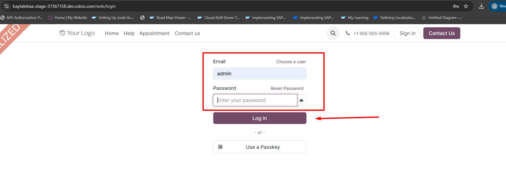
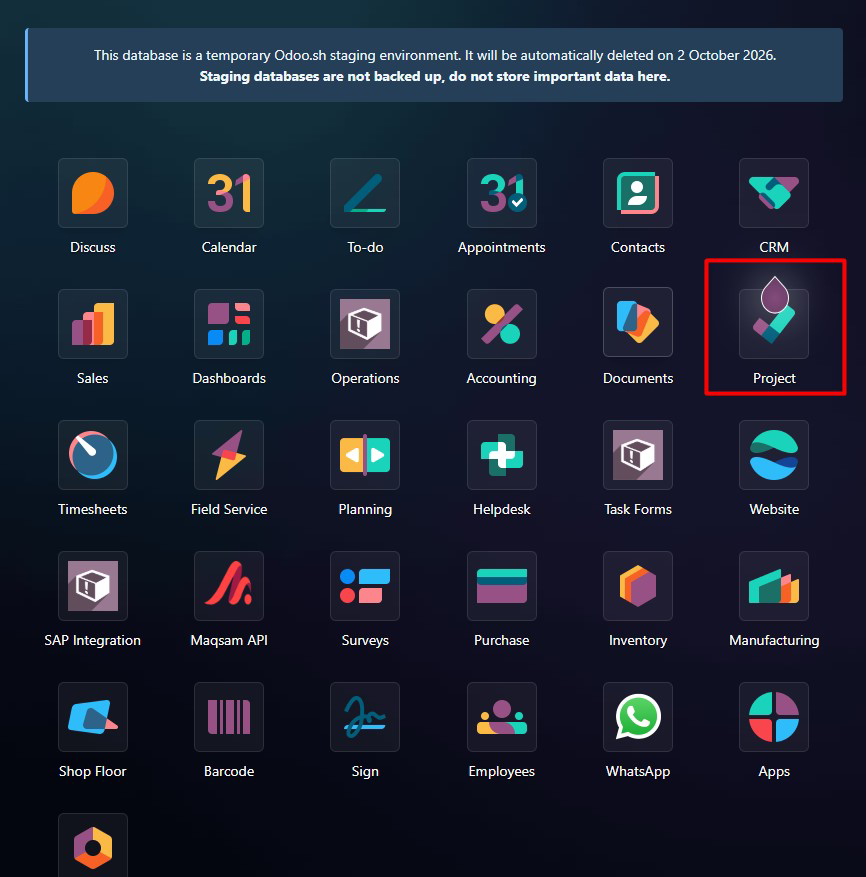
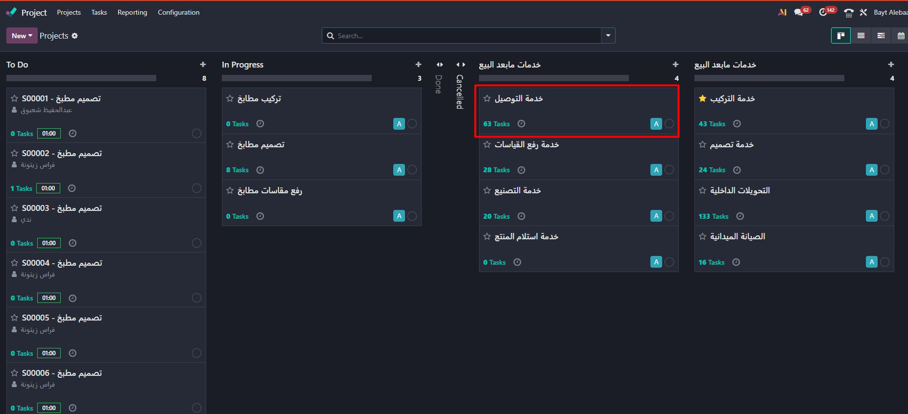

اختيار موعد التوصيل

يختار العميل موعد التوصيل بناءً على الطاقة الاستيعابية المحددة مسبقًا لكل صالة.
مدخل عام
دليل المستخدم لبدء دورة عمل خدمة التوصيل داخل نظام خدمات مابعد البيع.
يهدف هذا الدليل إلى توضيح دورات عمل خدمات مابعد البيع من خلال نظام خدمات مابعد البيع، بدءًا من تسجيل الدخول واستعراض فواتير العميل التي تحتوي على خدمات.
تعتمد دورة العمل على التكامل بين SAP ونظام خدمات مابعد البيع، حيث يتم إنشاء وفوترة الفاتورة في SAP، ثم تظهر الفاتورة في نظام خدمات مابعد البيع ليتم استكمال إجراءات الخدمات التالية: خدمة التوصيل، خدمة رفع المقاسات، خدمة التركيب، خدمة التصميم، وخدمة التصنيع.
يمكن الدخول إلى نظام خدمات مابعد البيع من خلال الرابط التالي:
https://baytalebaa-stage-37367158.dev.odoo.com/

بعد تسجيل الدخول إلى نظام خدمات مابعد البيع، تظهر الصفحة الرئيسية التي تحتوي على التطبيقات المتاحة للمستخدم.
تختلف التطبيقات الظاهرة من مستخدم إلى آخر حسب الصلاحيات (User Permissions) المحددة له.
للبدء في دورة عمل التوصيل، يتم الدخول إلى تطبيق:
Project

بعد الضغط على تطبيق Project، تظهر للمستخدم الخدمات والمشاريع المرتبطة بصلاحياته.
يظهر لكل مستخدم فقط الخدمات والمعلومات التي تقع ضمن نطاق الصلاحيات الممنوحة له.

تبدأ دورة العمل بوصول الفاتورة التي تحتوي على خدمة التوصيل من SAP إلى نظام خدمات مابعد البيع، حيث تظهر في مرحلة "طلب توصيل" لبدء تنفيذ الخدمة.


تظهر الفاتورة في مرحلة طلب التوصيل، ويتم نقلها إلى مرحلة جدولة التوصيل إما بشكل يدوي عن طريق باستخدام السحب والإفلات (Drag & Drop)، أو يقوم النظام بنقلها تلقائيًا في حال لم يتم نقلها يدويًا.


عند انتقال المهمة إلى مرحلة جدولة التوصيل، يقوم النظام تلقائيًا بإرسال رسالة واتساب إلى العميل تحتوي على رابط حجز موعد التوصيل. يفتح العميل الرابط، ثم يحدد موعد التوصيل وموقع تسليم البضاعة ويؤكد الحجز.
بعد وصول الرابط للعميل (خدمة العملاء)، يقوم العميل بالخطوات التالية:
يختار العميل موعد التوصيل بناءً على الطاقة الاستيعابية المحددة مسبقًا لكل صالة.

يراجع العميل بياناته ويحدد موقع تسليم البضاعة قبل تأكيد الموعد.

بعد تأكيد البيانات والموعد، يتم تثبيت الحجز وتظهر للعميل رسالة تأكيد الموعد.
بعد انتهاء العميل من جدولة موعد التوصيل، يقوم النظام تلقائيًا بنقل المهمة إلى مرحلة ربط الخدمة بالسائق، حيث يتعين على مسؤول التحميل تحديد السائق الذي سيقوم بتنفيذ خدمة التوصيل.

بعد تحديد السائق، تنتقل المهمة بشكل تلقائي إلى مرحلة ملئ النموذج (سند التحميل)، حيث يقوم الموظف المعني بملئ كافة بيانات أمر التحميل.


بعد الانتهاء من ملئ بيانات سند التحميل وحفظها، تنتقل المهمة إلى مرحلة جاري التوصيل، ويتم إرسال رسالة واتساب إلى السائق لبدء الرحلة.
بدء المهمة ← توثيق التوصيل ← إنهاء المهمة

يبدأ السائق تنفيذ مهمة التوصيل من خلال بوابة السائق بالضغط على Start لبدء الرحلة.

بعد الانتهاء من عملية التوصيل، يقوم السائق برفع صورة لتوثيق إتمام التوصيل.

بعد الانتهاء من تنفيذ التوصيل، يختار السائق إنهاء المهمة.
تأكيد العميل ← اكتمال التوصيل

بعد إنهاء المهمة يتم إرسال رمز OTP إلى العميل للتأكد من استلام الخدمة.

بعد إدخال رمز OTP بنجاح تصبح المهمة Completed ويتم تأكيد اكتمال خدمة التوصيل.

تبدأ عملية التحويلات الداخلية بوصول فاتورة من SAP. وإذا كانت الفاتورة تحتوي على منتجات موجودة في مستودعات مختلفة عن مستودع التجمع، يتم إنشاء التحويلات الداخلية داخل نظام خدمات مابعد البيع لنقل البضاعة من موقعها الحالي إلى مستودع التجمع.
ملاحظة: تظهر التحويلات الداخلية في مرحلة طلب جديد.

يمكن استعراض كافة طلبات التحويلات الداخلية من خلال مرحلة طلب جديد، والتي تعرض المعلومات التالية: رقم الفاتورة، كود المستودع الذي يحتوي على البضاعة، وكود مستودع الوجهة (مستودع التجمع).

وفق الصلاحيات المتاحة لموظف المستودع الذي يحتوي على المنتج (مثال: R574)، يمكنه الضغط على Record Transfer لتحديد الأصناف والكميات التي سيتم إرسالها إلى مستودع التجمع (مثال: R521).

بعد الضغط على زر Record Transfer، تظهر نافذة تسجيل النقل، حيث يحدد الموظف ما إذا كان النقل جزئيًا (Partial Transfer) أو لكامل الكمية المتبقية (Full Remaining Transfer)، ثم يحدد الكمية المراد نقلها ويضغط على Record Transfer لتأكيد عملية النقل.

بعد تسجيل عملية النقل، تنتقل المهمة إلى مرحلة "جاري النقل".
في هذه المرحلة تكون البضاعة قيد النقل من المستودع الحالي إلى مستودع التجمع، وعند وصولها يتم استكمال إجراءات تأكيد الاستلام وتسجيل الكمية المستلمة.
عند وصول البضاعة إلى مستودع التجمع، يتم فتح مهمة التحويلات الداخلية والضغط على زر Confirm Receipt لبدء تأكيد الكمية المستلمة.

يقوم الموظف بتأكيد استلام كامل الكمية أو جزء منها حسب الاستلام الفعلي، ثم يضغط على زر تأكيد الاستلام.

بعد نجاح عملية تأكيد الاستلام (Confirm Receipt)، تنتقل المهمة تلقائيًا من مرحلة جاري النقل إلى مرحلة تم الاستلام.
بعد تأكيد استلام البضاعة في مستودع التجمع، تنتقل المهمة إلى مرحلة تم الاستلام، وبذلك يكتمل مسار التحويلات الداخلية.